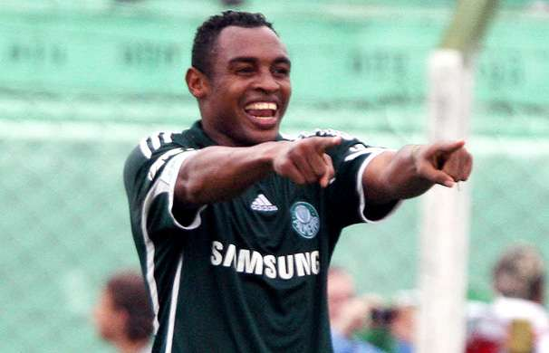

Desde a criação do cartola, diversas foram as mitadas e micadas feitas pelos jogadores, alegrando ou irritando os cartoleiros. Com o advento do capitão, dobrando a pontuação do jogador escolhido, é possível pontuar até mesmo 50 ou 60 pontos com um só jogador. Porém, essa lista não contaremos com a pontuação dobrada, confira o Top 10 (ou será Top 11?) com as maiores mitadas da história:
- IBSON | FLAMENGO / DOUGLAS FRIEDRICH | AVAÍ 33 pontos
- RODALLEGA | BAHIA 33,20 pontos
- NEYMAR | SANTOS 33,40 pontos
- OBINA | PALMEIRAS 33,80 pontos 
- ÉDERSON | ATLÉTICO PARANAENSE 34,90 pontos
- RONALDINHO GAÚCHO | ATLÉTICO MINEIRO 35,10 pontos
- FRED | FLUMINENSE 35,90 pontos
- JONAS | GRÊMIO 36,40 pontos
- NEYMAR | SANTOS 37,70 pontos
- ARRASCAETA | FLAMENGO 37,90 pontos

Abrindo a lista, temos dois jogadores: Douglas e Éderson, que fizeram 33 pontos ambos, dividindo a 10ª posição da lista. Portanto, transformando ela em top 11.
De um lado Ibson, em uma partida contra o Palmeiras, o meio-campista marcou 3 gols na partida, ajudando o time rugro-negro a realizar uma vitória de 3 a 0, garantindo, assim, o seu lugar na lista, sendo o jogador mais antigo da lista, fazendo sua pontuação em 2008. Por outro lado, Douglas Friedrich, único goleiro entre os 10. Jogando pelo Avaí, o goleiro fez milagres contra o grêmio, garantindo a vitória improvável do seu time, para garantir a sua pontuação, o goleiro fez 7 defesas difíceis (valiam 3 pontos) e defendeu 1 penâlti.
Prosseguindo, a nona posição conta com Rodallega. Diferentemente de Ibson, o atacante foi o último a conseguir entrar na lista, fazendo sua pontuação em 2021. No jogo Bahia e Fortaleza, Rodallega fez 4 gols, garantindo a vitória de 4 a 2 do seu time.
Na 8ª posição, fazendo sua primeira aparição, encontra-se Neymar. Em sua passagem pelo Santos, o jogador foi um dos atacantes mais rentáveis da história do Cartola. Em uma grande atuação do atacante santista, o jogador fez 3 gols na partida contra o Cruzeiro e carimbou seu nome na lista.
Seguindo com o próximo integrante, temos ele: Obina. Na goleada do Palmeiras contra o Goiás, o atacante fez um hat-trick e garantiu a sua pontuação de 33,80 pontos.
Sem dúvidas, um ótimo caminho para chegar entre as melhores pontuação é o hat-trick. Portanto, Éderson foi mais um jogador que fez os 3 gols e mitou, garantindo, além da vitória do Atlético Paranaense contra o Vasco, o seu lugar no Top 10.
Entrando no Top 5, temos o bruxo: Ronaldinho Gaúcho. Em sua excelente passagem pelo Atlético Mineiro, o atacante fez maravilhas na goleada de 6 a 0 do galo contra o Figueirense, marcando 3 gols e dando 2 assistências, assegurando seu lugar entre os 5 maiores pontuadores da história.
Em um jogo apertado e com muitos gols, Fred fez a diferença para o time carioca, marcou 4 gols e garantiu que o seu time triunfasse contra o Grêmio em uma vitória de 5 a 4, garantindo, merecidamente, seu lugar na quarta posição da lista.
Entrando no Top 3, temos o meio campista Jonas. Em uma vitória tranquila do time gaúcho contra o Grêmio Prudente, o jogador do grêmio fez 3 gols e deu 1 assistência, assegurando uma pontuação de 36,40 pontos.
Novamente aparecendo na lista, a segunda melhor pontuação pertence a Neymar, o único jogador com duas aparições na lista. Em uma vitória do Santos contra o Atlético Paranaense, o atacante Santista marcou os 4 gols do time na partida, garantindo a segunda maior pontuação da história do cartola.
No topo da lista está ele: Arrascaeta. Em uma vitória esmagadora do time rubro-negro contra o Goiás, o uruguaio tava inspirado e ajudou o time com 3 gols e 2 assistências, garantindo a entrada do seu nome no topo das maiores pontuações da história. Confira abaixo os melhores momentos dessa partida que garantiu os 37,90 pontos de Arrascaeta.
Essas foram as 10 maiores pontuações da história. Muito obrigado por ter lido esse tópico.